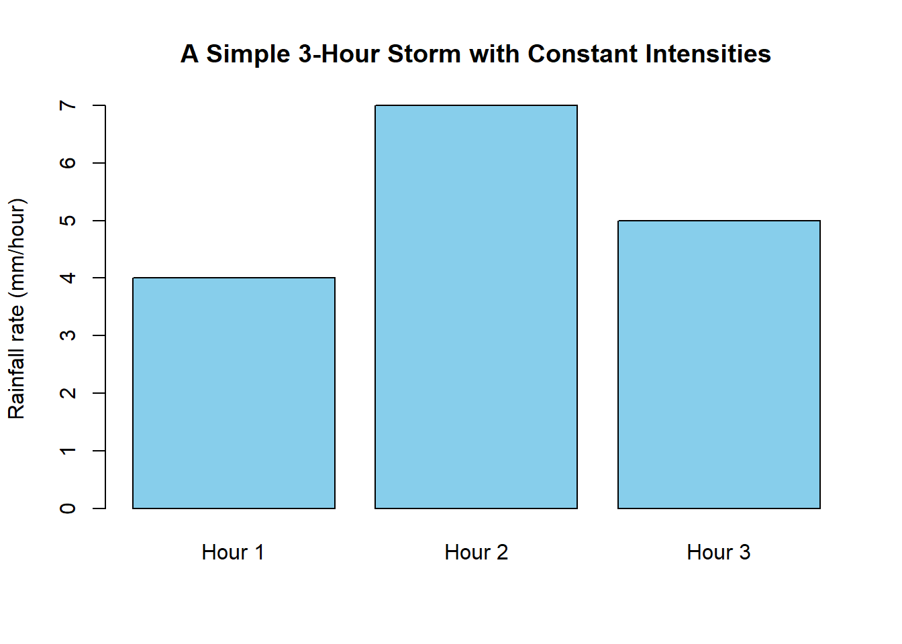
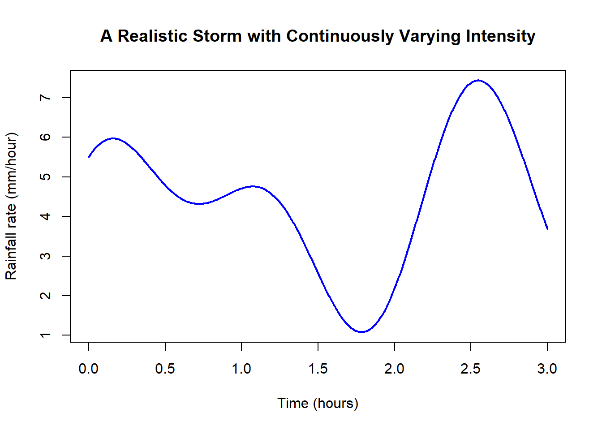
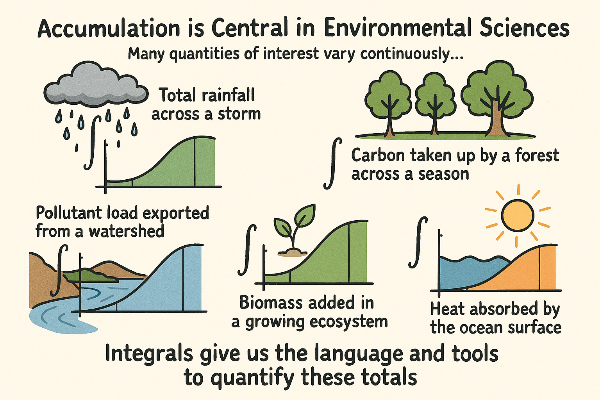
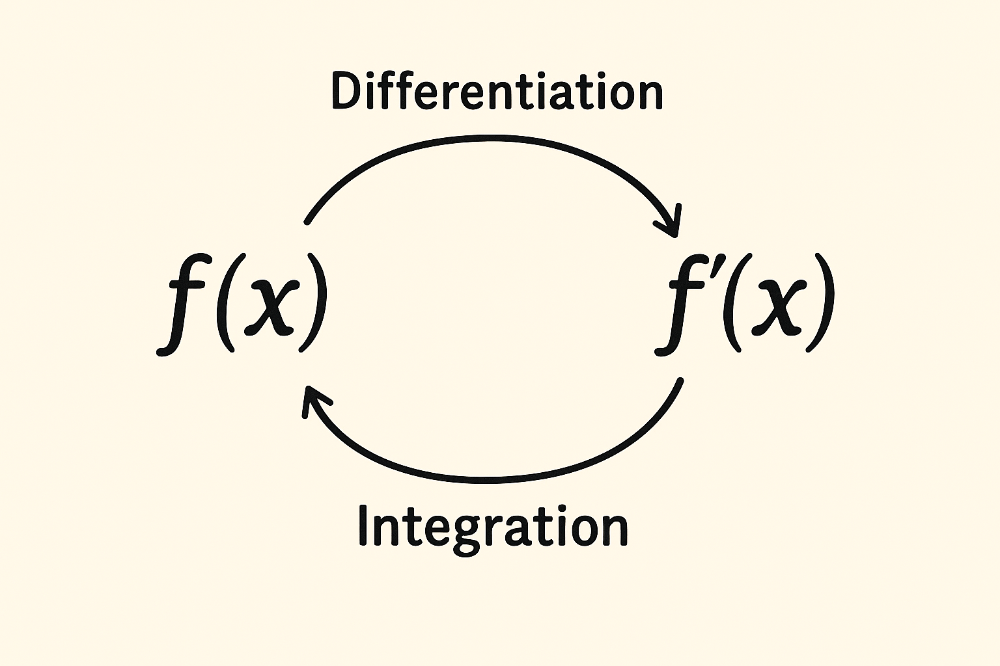
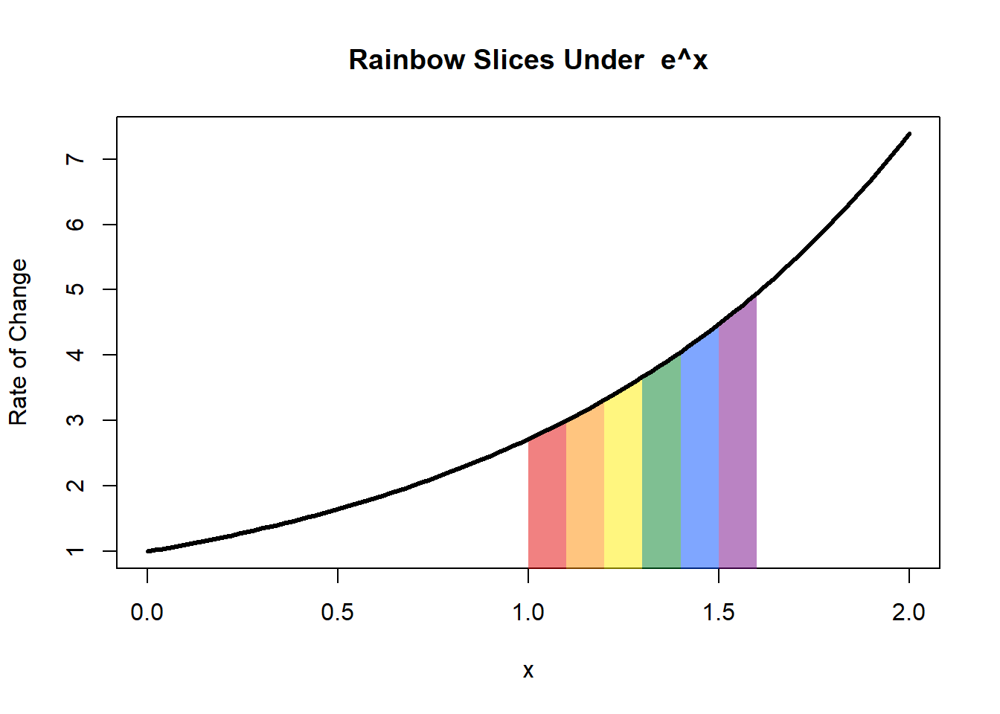

Chapter 2 Introduction to Calculus II
Calculus II marks the transition from thinking about instantaneous change to thinking about accumulated change. In Calculus I, your primary tools described how natural systems behave at a given moment, such as how fast a population is growing, how quickly temperature is changing, or how sharply a pollutant concentration shifts at a point in space.
In this course, we step back and ask a different set of questions:
- How much water flowed down a stream over the day?
- How much carbon did a forest take up this summer?
- How much nitrogen was exported from a watershed during a storm?
- How much biomass accumulated in a recovering ecosystem?
These are questions about totals, and in the natural sciences, totals matter. Being able to quantify accumulation helps us understand environmental systems that are dynamic, interconnected, and continuously changing.
This course is the second half of the Q SCI 291–292 sequence, which builds the mathematical foundation used across biology, ecology, conservation, marine science, and environmental science. Alongside the core mathematical ideas, the course emphasizes learning how to think quantitatively about real systems and developing the reasoning skills needed to communicate scientific results clearly.
By the end of the course, you will be able to:
- Explain and interpret definite integrals using Riemann sums, limits, and graphical representations.
- Compute and apply integrals using substitution, integration by parts, and numerical methods to solve environmental and biological problems.
- Analyze and model natural systems using basic differential equations, including separable and first-order linear forms.
- Construct and justify clear mathematical reasoning, written, numerical, and graphical, so you can communicate solutions effectively and assess their validity.
2.1 What Calculus II Is Really About
At its core, Calculus II is the study of accumulation. Many quantities in the natural world, such as heat, nutrients, biomass, pollutants, water, and individuals, change continuously rather than in neat steps. When a quantity’s rate changes from moment to moment, how do we determine the total amount gained or lost? Integrals give us the language and tools to answer that question.
Example: Accumulating Rainfall in a Simple Storm
To understand the idea of accumulation, imagine a 3-hour storm where the rainfall intensity stays constant within each hour. Suppose the observed intensities are:
- Hour 1: 4 mm/hour
- Hour 2: 7 mm/hour
- Hour 3: 5 mm/hour
If the rainfall rate is constant within each hour, then the total rainfall is simply:
\[ \text{Total rainfall} = 4 + 7 + 5 = 16 \text{ mm}. \]
Each bar represents the amount of rain added during one hour. The total rainfall is the sum of these three rectangular blocks.

This situation is straightforward because each hour contributes a clean, fixed amount of rainfall.
When Rainfall Intensity Is Not Constant
Real storms rarely behave this neatly. Rainfall intensity may rise, fall, and fluctuate as storm cells pass overhead. Instead of three flat bars, the intensity becomes a wiggly, continuously changing curve.

This leads us to a central question for this course:
How much total rain falls during a storm like this?
There are no simple hourly blocks now. The rainfall rate:
- rises
- dips
- oscillates
- never remains constant long enough for a simple calculation
To find the total rainfall, we need a method that can add up many small and continuously changing contributions.
A key insight is that large totals often come from accumulating many small pieces. This idea is intuitive when thinking about rainfall or streamflow. It is also the conceptual foundation of Riemann sums and definite integrals. Although we will not enter the technical details yet, this perspective will guide us throughout the course and will help connect data, graphs, equations, and models.
Another major theme involves reversing derivatives. If a derivative represents how something changes, then an antiderivative recovers the original quantity. The Fundamental Theorem of Calculus ties these ideas together and provides the foundation for the integration techniques you will learn.
Finally, many environmental and biological systems follow rules of change. Populations grow or decline, chemicals decay, temperatures level out, and nutrients move through ecosystems. These processes can be described using differential equations, which act as mathematical stories of how systems evolve. In this course, we will learn simple and powerful forms, especially separable and first-order linear equations, that allow us to model natural processes clearly and effectively.
2.2 What You Bring From Calculus I
Although this is a new course, much of what you already know will serve as essential groundwork. Key ideas from Calculus I include:
- Understanding how to read and interpret graphs
- Using derivatives as rates of change
- Recognizing what it means for a quantity to increase, decrease, level off, or turn around
- Working with functions and equations in a flexible and confident way
You will also find that clear and organized algebra makes a big difference. Rearranging equations, factoring, simplifying expressions, and solving for unknowns are routine steps in almost every meaningful calculation. Strengthening these skills now will make the deeper ideas of Calc 2 much more accessible.
2.3 What Calculus II Is About
Calculus II shifts the focus from understanding how a quantity changes at a single moment to understanding how much of that quantity accumulates over time or space. In Calculus I you learned to work with derivatives and rates of change. In this course, you will explore how to measure totals when the rate is not constant.
Accumulation is central in the environmental sciences. Many quantities of interest vary continuously, such as total rainfall across a storm, carbon taken up by a forest across a season, pollutant load exported from a watershed, biomass added in a growing ecosystem, or heat absorbed by the ocean surface. Integrals give us the language and tools to quantify these totals.

This course serves as a bridge between the mechanics of differentiation and the broader world of mathematical modeling and scientific interpretation. Throughout the course you will learn to connect graphs, equations, and context to make sense of complex natural systems.
2.4 Big Themes of the Course
2.4.1 Accumulation
Many environmental processes unfold gradually rather than in discrete chunks. Rainfall builds up drop by drop, a stream transports nutrients continuously, and forests take up carbon throughout the day as light changes. In all of these situations, the total amount that accumulates is the result of many small contributions happening moment by moment.
Integrals give us a framework for quantifying these cumulative effects. When a rate varies across time, space, or depth, an integral allows us to add up tiny pieces into a meaningful whole. This perspective is essential in environmental science, where totals often tell us more about system behavior than any single measurement.
Consider a few examples:
Total nitrogen export from a watershed:
Streamflow and nutrient concentration both change during storms. The total mass exported is not the peak concentration multiplied by time, but the accumulation of many changing contributions as water moves through the system.Total phytoplankton production over a day:
Photosynthesis depends on light, which changes continuously with cloud cover and solar angle. The daily production is the sum of many small increments of carbon fixed throughout the day.Energy exchanged in an ocean mixed layer:
Heat flux varies with wind, sunlight, and water temperature. Understanding how much energy enters or leaves the ocean requires accumulating many small changes over time.
Accumulation is one of the central ideas of this course. Integrals appear throughout Calculus II not just as mathematical procedures, but as conceptual tools for interpreting how environmental systems grow, shrink, cycle, and respond to change. Seeing the world in terms of accumulated effects helps build intuition for processes that operate continuously, whether they unfold over seconds, seasons, or decades.
2.4.2 Reversing Derivatives: Antiderivatives and the Fundamental Idea
A derivative describes how something changes at each moment. An integral describes how much has changed in total. These two ideas are connected through antiderivatives, which allow us to reverse the process of differentiation. This relationship is one of the central insights of Calculus II and is the foundation of the Fundamental Theorem of Calculus.

{fig.alt=‘A simple conceptual diagram showing the relationship between differentiation and integration. On the left is a function f(x) a differentiation arrow points to f’(x). Another arrow goes from right to left, from f’(x) to f(x) with the word integration’ style=“float=center, width:450px; margin:10px;”}Thinking in terms of environmental systems makes this connection clearer. In many natural processes, a rate of change is easier to measure or model than the total amount. Antiderivatives give us a way to move from the rate back to the accumulated quantity.
2.4.3 Why This Connection Matters
In environmental science, we often measure or model rates:
- the rate at which pollutants decay
- the rate of heat transfer into a lake
- the rate at which a population grows
- the rate of oxygen consumption in soil
But what we usually care about are the totals:
- total pollutant remaining
- total heat gained
- total change in population
- total oxygen used
Antiderivatives provide the bridge between “how something changes” and “how much it has changed overall.” This connection is the conceptual heart of the Fundamental Theorem of Calculus, and it explains why derivatives and integrals, though they look different, are deeply linked.
Understanding this relationship prepares you for the computational techniques that come later in the course, and it builds intuition for interpreting scientific data where change and accumulation interact continuously.
2.4.4 Change Over Time: A First Look at Differential Equations
Many natural systems evolve according to rules that describe how things change rather than simply giving their values at any moment. A population grows because new individuals are added. A pollutant decays because chemical reactions reduce its concentration. A lake warms or cools because heat is exchanged with the environment. In each case, the rate at which a quantity changes is often easier to understand, measure, or model than the total amount itself.
Differential equations provide a mathematical framework for capturing these rules of change. Instead of expressing a relationship between quantities alone, a differential equation expresses a relationship between a quantity and its rate of change. This allows us to describe dynamic systems that respond to their own current state. For example:
- Population growth may speed up when populations are small, slow down when resources become limited, or collapse under stress.
- Chemical concentrations may decline at a rate that depends on how much of the substance is present.
- Heat transfer may proceed more quickly when temperature differences are large, and more slowly as equilibrium is approached.
- Nutrients may cycle through ecosystems at rates that depend on biological activity, temperature, or moisture.
These processes all share a common feature: the present state of the system determines how it will change next. Differential equations make this dependency explicit.
At this stage, the goal is not to solve differential equations or manipulate them algebraically. Instead, we aim to understand what they represent. A differential equation is essentially a rulebook for how a system responds over time. It provides a recipe that tells us:
- if the system is increasing or decreasing,
- whether that change is fast or slow,
- how the rate of change varies with context,
- and what types of long-term behaviors might emerge.
Later in the course, you will learn techniques for solving differential equations and expressing their solutions in closed form. For now, it is enough to recognize that they are powerful tools for modeling real systems. They allow us to translate scientific understanding into mathematical language, and to move from descriptions like “the population grows faster when resources are abundant” to precise statements that can be analyzed, simulated, and interpreted.
Differential equations are not just mathematical objects. They are a way of thinking about systems that change continuously, and they provide a natural bridge between calculus and the dynamic processes that shape the natural world.
2.5 What You Need From Calculus I
2.6 Building an Intuition for Accumulation
Before we compute any integrals, it is helpful to develop a clear intuition for how totals arise from variable rates. Many environmental quantities do not behave uniformly. Streamflow responds to storms, photosynthesis rises and falls with sunlight, pollutant concentration shifts with depth and time, and populations grow quickly under some conditions and slowly under others.
A useful way to think about accumulation is to imagine that each small moment in time or each small slice of space contributes a tiny amount to the total. When we add up all these contributions, we get a meaningful quantity such as total rainfall, total biomass added, or total pollutant exported. This perspective explains why the integral has the structure it does and why graphical reasoning plays such an important role in this course.

Graphical reasoning is especially powerful here. Without doing any calculations, a graph can show whether a system is gaining or losing, whether accumulation is happening quickly or slowly, and whether changes are steady or fluctuating. Throughout the course, we will use graphs not only to visualize functions but also to interpret integrals, predict behavior, and communicate reasoning.
2.6.1 Units and Interpretation
Units play an equally important role. Because integrals always correspond to real physical quantities, understanding them requires careful attention to what is being measured and how the units combine. For example:
- integrating a rate measured in “individuals per year” over time results in “individuals,”
- integrating “mg/L multiplied by m³/s” gives a pollutant load measured in “mg/s,”
- integrating “W/m² over time” yields energy in joules.
Recognizing this structure ensures that results are meaningful and consistent with the scientific context. Thinking about small pieces, graphs, and units builds the intuition that makes the formal definition of the integral feel natural once we introduce it later in the course.
2.7 Looking Ahead
As the course unfolds, you will learn how to compute integrals efficiently, how to solve differential equations that describe natural systems, and how to analyze environmental processes using a combination of mathematics, graphs, and scientific reasoning. More importantly, you will develop the ability to connect mathematical results back to the real-world systems they describe — a skill that is essential in every field of environmental science.
Calculus II is not simply about mastering techniques. It is about learning to see the world through a quantitative lens: to understand how change accumulates, how systems evolve, and how mathematics can illuminate the patterns and processes that shape the natural environment.
Welcome to the journey.